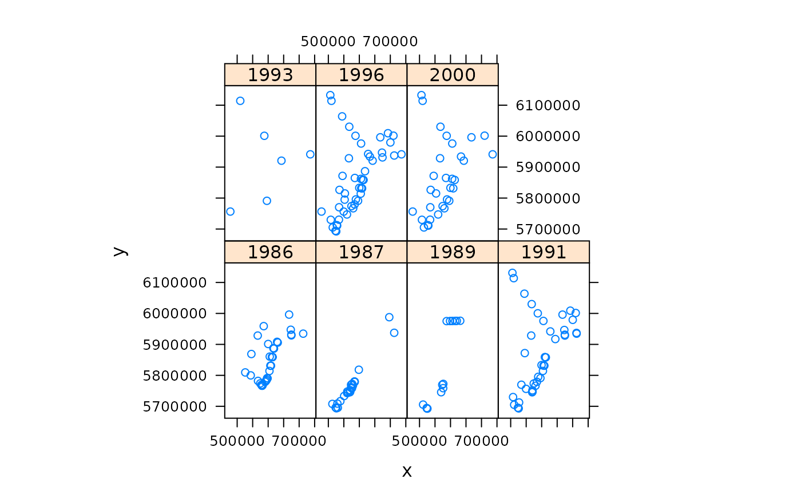

pcb.RdPCB138 measurements in sediment at the NCP, which is the Dutch part of the North Sea
data(pcb)
This data frame contains the following columns:
measurement year
x-coordinate; UTM zone 31
y-coordinate; UTM zone 31
distance to coast of the Netherlands, in km.
sea water depth, m.
PCB-138, measured on the sediment fraction smaller than 63 \(\mu\), in \(\mu g/kg\) dry matter; BUT SEE NOTE BELOW
year; as factor
A note of caution: The PCB-138 data are provided only to be able to re-run the analysis done in Pebesma and Duin (2004; see references below). If you want to use these data for comparison with PCB measurements elsewhere, or if you want to compare them to regulation standards, or want to use these data for any other purpose, you should first contact mailto:basisinfodesk@rikz.rws.minvenw.nl. The reason for this is that several normalisations were carried out that are not reported here, nor in the paper below.
http://www.gstat.org/, http://www.rikz.nl/
Pebesma, E. J., & Duin, R. N. M. (2005). Spatial patterns of temporal change in North Sea sediment quality on different spatial scales. In P. Renard, H. Demougeot-Renard & R. Froidevaux (Eds.), Geostatistics for Environmental Applications: Proceedings of the Fifth European Conference on Geostatistics for Environmental Applications (pp. 367-378): Springer.
# demo(pcb)